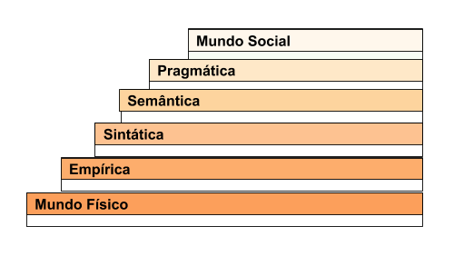

O Framework Semiótico, também chamado de Escada Semiótica representa seis camadas de significado que devem ser consideradas no design de um sistema, sendo:
Os três degraus superiores da escada são relacionados ao uso de signos, como funcionam na comunicação de significados e intenções, e quais são as consequências sociais de seu emprego.
Os demais degraus consideram aspectos de infraestrutura tecnológica, questões relacionadas a como os signos são estruturados e usados na linguagem, como são organizados, veiculados, que propriedades físicas possuem etc. (Liu, 2000; Baranauskas et al., 2013).

Representação do Framework Semiótico. Adaptado de Baranauskas et al. (2013)
Referências
Baranauskas, M. C. C., Martins, M. C. e Valente, J. A. (2013). Codesign de Redes Digitais: tecnologia e educação a serviço da inclusão social. Penso Editora.
Liu, K. (2000). Semiotics in information systems engineering. Cambridge University Press